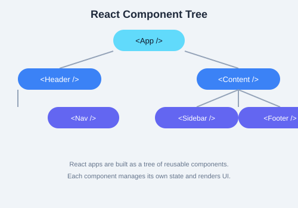

This chapter serves as a comprehensive API reference for React 18+. Use it as a quick lookup when you need the exact signature or behavior of a built-in API.
These are exported from the react package and available at the top level:
React.createElement(type, props, ...children)
// Creates a React element. JSX compiles to this.
// type: tag name string | React component | React.Fragment
// props: object or null
// children: any number of child nodes
React.createElement("div", { className: "box" }, "Hello");React.createRef()
// Creates a ref object: { current: null }
// Used in class components. In function components, use useRef instead.
class MyComp extends React.Component {
inputRef = React.createRef();
focus = () => this.inputRef.current.focus();
render() { return <input ref={this.inputRef} />; }
}React.forwardRef((props, ref) => ReactElement)
// Lets parent components pass a ref through to a child DOM element.
const FancyButton = React.forwardRef(({ children }, ref) => (
<button ref={ref} className="fancy">{children}</button>
));React.lazy(() => import("./Component"))
// Returns a dynamically loaded component. Must be wrapped in Suspense.
const LazyChart = React.lazy(() => import("./Chart"));React.memo(Component, [areEqual])
// Memoizes a component — only re-renders if props changed (shallow compare).
// Optional areEqual(prevProps, nextProps) for custom comparison.
const PureList = React.memo(({ items }) => (
<ul>{items.map(i => <li key={i}>{i}</li>)}</ul>
));React.startTransition(callback)
// Marks a state update as a transition (non-urgent).
// Urgent updates (input, clicks) are not blocked by transitions.
startTransition(() => {
setSearchQuery(query);
});These are exported from react-dom and interact with the browser DOM.
import { createRoot } from "react-dom/client";
const root = createRoot(container);
root.render(<App />);
// Replaces ReactDOM.render in React 18+. Creates a concurrent root.import { hydrateRoot } from "react-dom/client";
hydrateRoot(container, <App />);
// Hydrates server-rendered HTML. Used with frameworks like Next.js.import ReactDOM from "react-dom";
ReactDOM.render(<App />, container);
// Legacy API — use createRoot for new projects.ReactDOM.findDOMNode(componentInstance);
// Returns the underlying DOM node. Avoid — use refs instead.All built-in hooks with their type signatures:
| Hook | Signature | Description |
|---|---|---|
| useState | useState<S>(initial: S | (() => S)): [S, Dispatch<SetStateAction<S>>] | Local state with lazy initializer |
| useEffect | useEffect(effect: () => (void | (() => void)), deps?: any[]): void | Side effects after paint; cleanup runs on unmount/deps change |
| useLayoutEffect | useLayoutEffect(effect, deps?): void | Same as useEffect but fires synchronously after DOM mutations |
| useContext | useContext<T>(ctx: Context<T>): T | Reads current context value |
| useReducer | useReducer<S, A>(reducer: (S, A) => S, initial: S, init?: (S) => S): [S, Dispatch<A>] | Complex state with reducer pattern |
| useCallback | useCallback<T extends Fn>(fn: T, deps: any[]): T | Memoizes a function reference |
| useMemo | useMemo<T>(factory: () => T, deps: any[]): T | Memoizes a computed value |
| useRef | useRef<T>(initial: T): MutableRefObject<T> | Mutable ref that persists across renders |
| useImperativeHandle | useImperativeHandle(ref, createHandle, deps?): void | Customizes ref exposed from forwardRef |
| useDebugValue | useDebugValue(value, format?): void | Labels custom hooks in React DevTools |
| useTransition | useTransition(): [isPending: boolean, startTransition: (callback) => void] | Marks state update as non-urgent |
| useDeferredValue | useDeferredValue<T>(value: T): T | Returns a deferred version of a value |
| useId | useId(): string | Generates unique IDs for accessibility attributes |
| useSyncExternalStore | useSyncExternalStore(subscribe, getSnapshot, getServerSnapshot?): T | Subscribe to external non-React stores |

React wraps native events in a SyntheticEvent for cross-browser consistency. Common event types:
onClick, onDoubleClickonChange, onInput, onSubmitonKeyDown, onKeyUp, onKeyPressonFocus, onBluronMouseEnter, onMouseLeave, onMouseMoveonTouchStart, onTouchEnd, onTouchMoveonScroll, onWheelonDragStart, onDragOver, onDropfunction handleEvent(e: SyntheticEvent) {
e.preventDefault();
e.stopPropagation();
console.log(e.type); // "click"
console.log(e.target); // native DOM element
console.log(e.currentTarget); // element the handler is attached to
console.log(e.nativeEvent); // raw native event
}useEffect(() => { fetch(url).then(setData) }, [])useState + useEffect with setTimeoutconst prev = useRef(value); useEffect(() => { prev.current = value; });const [on, setOn] = useState(false); <button onClick={() => setOn(!on)} />const [form, setForm] = useState({}); setForm(prev => ({ ...prev, [name]: value }))useEffect(() => { const id = setInterval(tick, 1000); return () => clearInterval(id); }, [])!ref.current?.contains(e.target)createPortal to render a details panel overlay.forwardRef on an Input component so parents can call focus().ErrorBoundary class component to catch rendering errors.React.memo and useCallback to optimize a list of recipe cards.useDeferredValue to keep the search input responsive while filtering a large list.